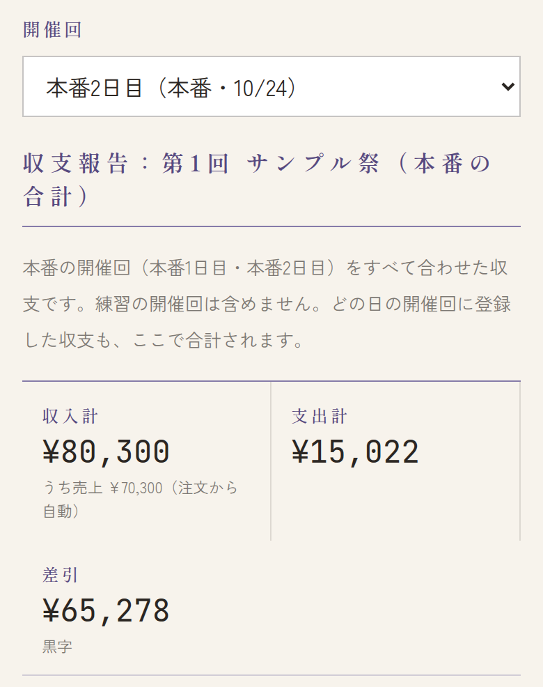
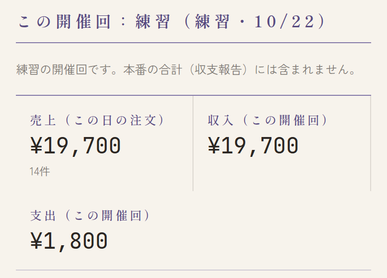
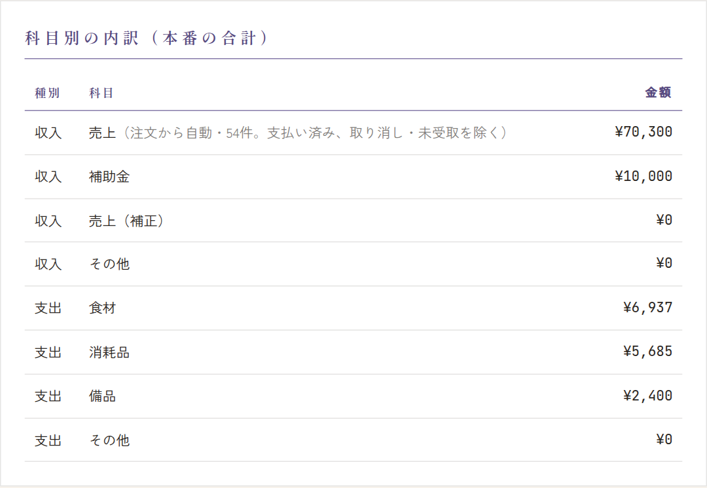
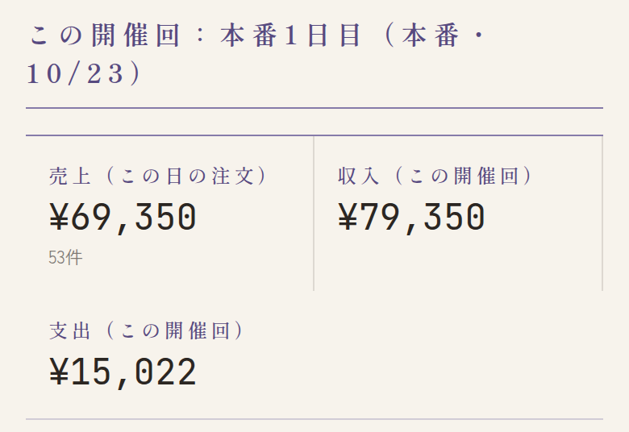
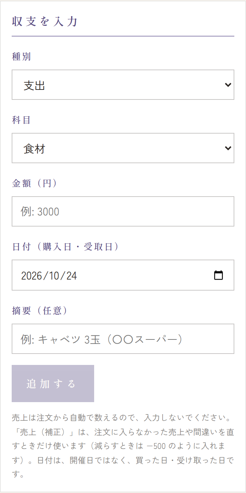
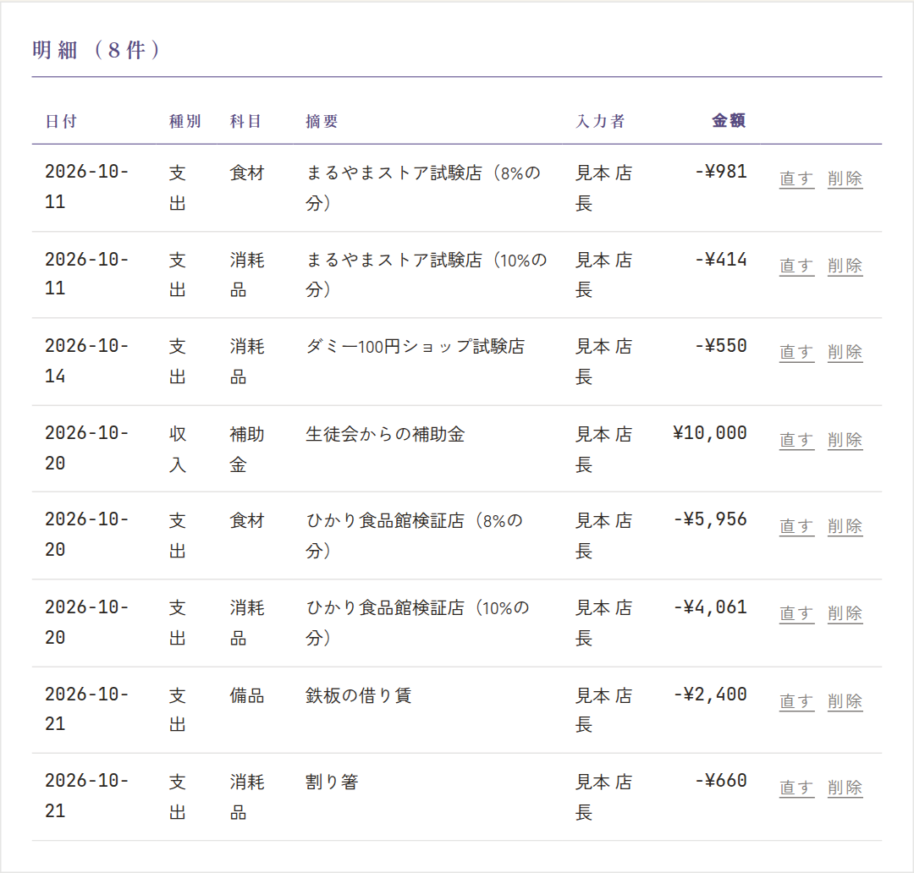
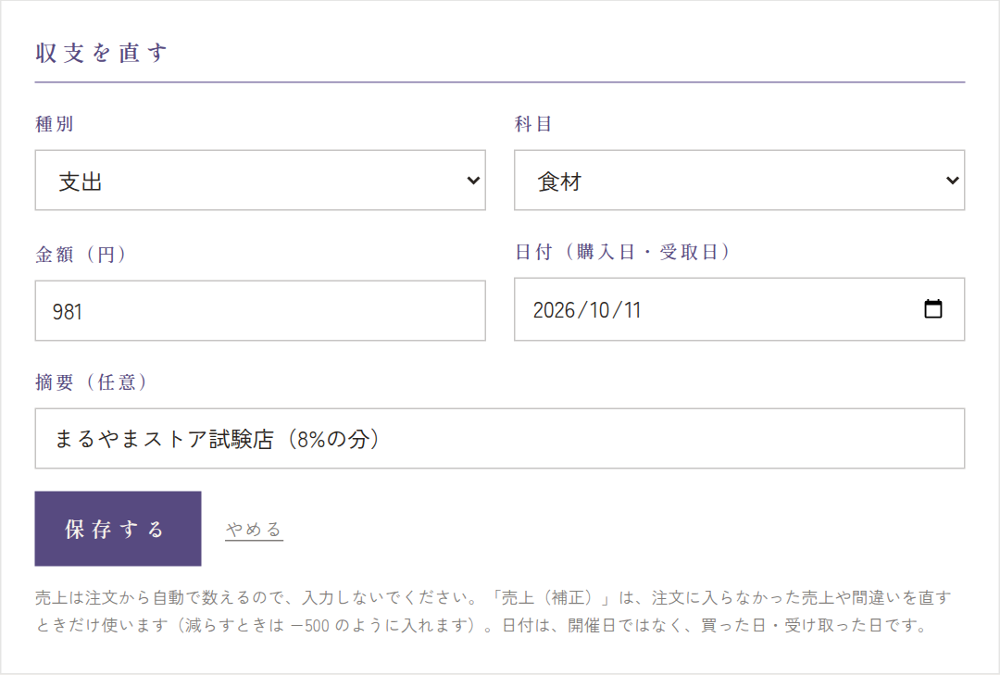
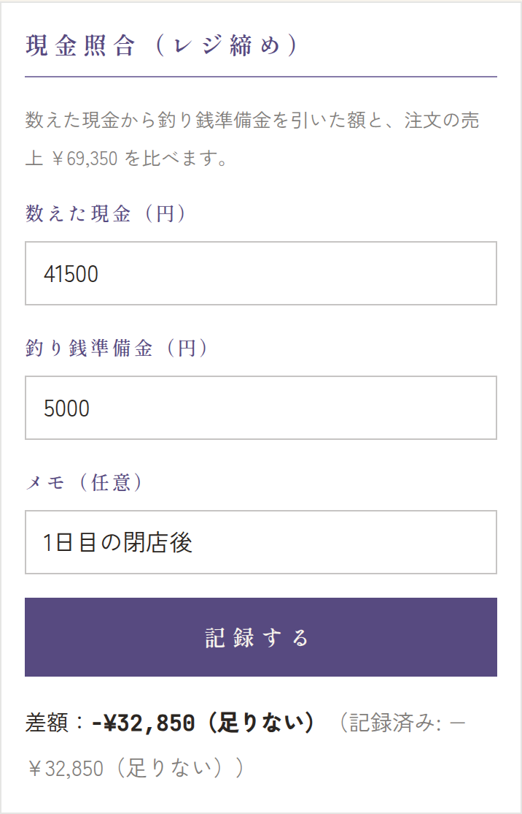
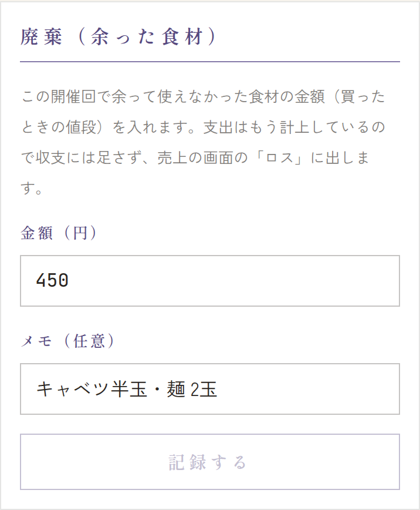

メニューの 収支 を開きます。上の 開催回 で、入力・確認する日を選びます（最初は今日にいちばん近い開催回）。
収支報告（本番の合計）


- 本番の開催回をすべて合わせた収支です。どの日の開催回に入れた収支も、ここで合計されます。
- 収入計: 売上（注文から自動で数えます）と、手で入れた収入（補助金など）。
- 支出計・差引: 差引は 収入計 − 支出計。マイナスなら赤字です。
練習の分は合計に入りません
練習の開催回に入れた支出・収入は、収支報告にも学校に出す書類にも入りません。練習の開催回を選ぶと「練習の開催回です。本番の合計（収支報告）には含まれません。」と出ます。


科目別の内訳


収入・支出を科目ごとに分けた金額です。いちばん上の「売上」は注文から自動で数えた分です。学校に出す収支報告書の科目の欄と同じ数字になります。
この開催回の数字


その下には、選んだ開催回だけの売上（その日の注文）・収入・支出が出ます。
補助金・支出を手で入れる
レシートのある買い物は、レシートから登録してください（→ レシートの確認と確定）。レシートのない収入・支出（補助金、借りた機材の代金など）を、ここで入れます。
- 上の 開催回 で、入れる日を選びます（本番のどの日でも合計されます）。
- 種別（支出／収入）と 科目 を選びます。補助金は 収入・補助金 です。
- 金額（円）と 日付（購入日・受取日）を入れます。日付は開催日ではなく、買った日・受け取った日です。
- 必要なら 摘要（例: 生徒会からの補助金）を入れて、追加する を押します。


- 売上は注文から自動で数えるので、入れないでください。注文に入らなかった売上や、間違いを直すときだけ「売上（補正）」を使います（減らすときは −500 のように入れます）。
直す・消す


- 直す: 明細の 直す を押すと、上の欄が「収支を直す」になります。直して 保存する（やめるときは やめる）。
- 消す: 削除 を押し、確認で OK を押します。
- レシートから登録した支出も、ここで直せます。税率ごとに分けたレシートは、摘要に「（8%の分）」のように出ます。
- 受け付けを締め切った開催回は、見るだけで直せません。直したいときは運営に連絡してください。


現金照合（レジ締め）
閉店後にレジの現金を数えて、注文の売上と合っているか確かめます。開催回ごとに記録します。
- 数えた現金（円）: レジの中のお金をぜんぶ数えて入れます。
- 釣り銭準備金（円）: 開店前にレジに入れておいたお釣り用のお金。
- 必要なら メモ を入れて、記録する を押します。


数えた現金 − 釣り銭準備金 と、その日の注文の売上を比べた差額が出ます。「±0 円（合っています）」なら合っています。「多い」「足りない」と出たら、取り消し・お釣りの間違いがないか確かめてください。
廃棄（余った食材）
その開催回で余って使えなかった食材の金額（買ったときの値段）を入れて、記録する を押します。売上の画面の「ロス」に出ます。支出はもう入っているので、収支には足しません。

